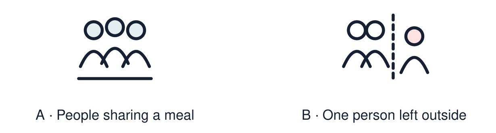

Arrival choices
You can begin without previous learning. Word help: belonging means feeling part of a group and welcome in it.

Start with 1 and 2. Try 3 and 4 when ready. Reading and exact scribing are available.
1 What does belonging mean?
Support: Use the reminder strip or talk it through with an adult.
2 Which meaning fits belonging?
Support: Choose: Feeling part of a group and welcome in it OR People who share a religion and meet together.
3 Give one way a faith community can support belonging.
Support: Use the model evidence anchor A or read one relevant card together.
4 Does everyone in a faith community feel belonging in the same way?
Support: Give a reason when ready.
Stretch: use a precise example or explain which detail supports your answer.
Evidence cards
Read, point or listen. Keep the source label with any detail you use.
A Simran
Fictional profile: Simran is Sikh. At the gurdwara she helps serve langar, a free meal for anyone. She says serving others makes her feel part of something.
Source: Authored profile
Limit: This is one person's view. Others who share the worldview may describe it differently.
B Yusuf
Fictional profile: Yusuf is Muslim. At Friday prayers he stands shoulder to shoulder with others. During Ramadan the community breaks the fast together.
Source: Authored profile
Limit: This is one person's view. Others who share the worldview may describe it differently.
C Four lenses
People: who is there? Place: where do they meet? Practice: what do they do? Values: what matters to them?
Source: Authored classroom resource
Limit: Four lenses are a starting point, not the whole picture.
D Belonging varies
Some people feel they belong strongly to a faith community. Others belong in quieter ways, or to several communities.
Source: Authored classroom resource
Limit: Belonging is personal and can change.
Shared investigation
1. Sort each detail: Simran’s community, Yusuf’s community or both.
2. Use the four lenses: people, place, practice, values.
Work with a partner or adult, or use your own table. One person suggests; the other checks the evidence. Swap after one turn. Passing is allowed.
Move or match the cards
| Cards to use |
|---|
| Shared food brings people together |
| Breaking the fast together in Ramadan |
| Serving langar to anyone who comes |
Possible labels: Both / Simran’s community / Yusuf’s community
Support: Read one evidence card together. Highlight a useful detail. Rehearse with: In ___ community, belonging can mean ___.
Further challenge: Explain how a shared practice can build belonging better than words alone.
Supported independent task
Complete this route only. Describe what belonging can mean in two faith or worldview communities.
1. Choose one profile.
2. Fill in two lenses: place and practice.
3. Say or finish: Belonging can mean ___.
Support: Read one evidence card together. Highlight a useful detail. Rehearse with: In ___ community, belonging can mean ___. Complete the organiser one space at a time. In ___ community, belonging can mean ___.
An adult may read or scribe your exact response. They should not choose the answer.
Standard independent task
Complete this route only. Describe what belonging can mean in two faith or worldview communities.
1. Complete the map for both profiles using the four lenses.
2. Find one similarity.
3. Finish: In ___ community, belonging can mean ___.
Support: In ___ community, belonging can mean ___.
Check the required evidence and revise one detail.
Stretch independent task
Complete this route only. Describe what belonging can mean in two faith or worldview communities.
1. Complete the map for both profiles.
2. Explain one similarity and one difference.
3. Explain why belonging varies between individuals.
Support: Choose the evidence independently. Use the frame only if it helps.
Explain how a shared practice can build belonging better than words alone.
Exit ticket
Choose a response mode. You may give your answers privately to an adult.
Give one way a faith community can support belonging.
Does everyone in a faith community feel belonging in the same way?
Support: In ___ community, belonging can mean ___.
Further challenge: Explain how a shared practice can build belonging better than words alone.